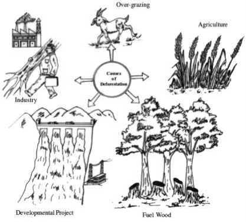
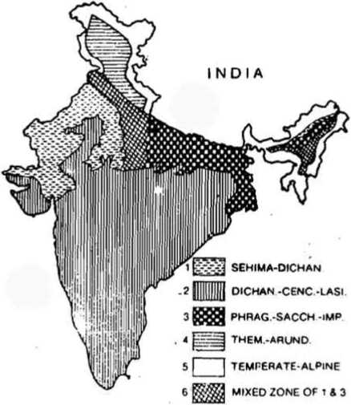

The interrelations between organisms and environment on the land constitute “Terrestrial Ecology”. Due to variation in the topographic features of valleys, mountains and slopes, certain differences occur. These differences are reflected in both the material and biotic diversities. Altitudinal and latitudinal variations cause shifts and differences in the climatic patterns. Due to varied climate, the plant and animal life existing in different terrestrial areas vary which result in differentiation of ecosystem as segments within the large biosphere. The most important limiting factors of the terrestrial ecosystems are moisture and temperature.
Tundra means a “barren land” since they are found where environmental conditions are very severe. There are two types of tundra- arctic and alpine.
• Distribution: Arctic tundra extends as a continuous belt below the polar ice cap and above the tree line in the northern hemisphere. It occupies the northern fringe of Canada, Alaska, European Russia, Siberia and island group of Arctic Ocean. On the south pole, tundra is very small since most of it is covered by ocean .
Alpine tundra occurs at high mountains above the with respect to Arctic mountains are found at all latitudes therefore alpine tundra shows day and night temperature variations.
• Flora and fauna: Typical vegetation of arctic tundra is cotton grass, sedges, dwarf heath, willows, birches and lichens. Animals of tundra are reindeer, musk ox, arctic hare, caribous, lemmings and squirrel.
Most of them have long life e.g. arctic willow has a life span of 150 to 300 years. They are protected from chillness by the presence of thick cuticle and epidermal hair. Mammals of the tundra region have large body size, small tail and small ear to avoid the loss of heat from the surface. The body is covered with fur for insulation. Insects have short life cycles which are completed during favourable period of the year.
The forest ecosystem includes a complex assemblage of different kinds of biotic communities. Optimum conditions such as temperature and ground moisture are responsible for the establishment of forest communities.
The nature of soil, climate and local topography determine the distribution of trees and their abundance in the forest vegetation. Forests may be evergreen or deciduous. They are distinguished on the basis of leaf into broad-leafed or needle leafed coniferous forests in the case of temperate areas.
The forest ecosystems have been classified into three major categories: coniferous forest, temperate forest and tropical forest. All these forest biomes are generally arranged on a gradient from north to south latitude or from high to lower altitude.
Do you know?
Dart Frogs got their name because hunters would tip their arrows in the frog’s poisons. Sadly, because people are cutting down rainforests for farming and ranching, Poison Dart Frogs are at risk. The Blue Poison Dart Frog is the most endangered due to the petshop market.
• Cold regions with high rainfall, strong seasonal climates with long winters and short summers are characterised by boreal coniferous forest
• This is characterised by evergreen plant species such as Spruce, fir and pine trees, etc and by animals such as the lynx, wolf, bear, red fox, porcupine, squirrel, and amphibians like Hyla, Rana, etc
• Boreal forest soils are characterized by thin podzols and are rather poor. Both because, the weathering of rocks proceeds slowly in cold environments and because the litter derived from conifer needle (leaf ) is decomposed very slowly and is not rich in nutrients.
• These soils are acidic and are mineral deficient. This is due to movement of large amount of water through the soil, without a significant counter-upward movement of evaporation, essential soluble nutrients like calcium, nitrogen and potassium which are leached sometimes beyond the reach of roots. This process leaves no alkaline oriented cations to encounter the organic acids of the accumulating litter.
• The productivity and community stability of a boreal forest are lower than those of any other forest ecosystem.
• The temperate forests are characterised by a moderate climate and broad-leafed deciduous trees, which shed their leaves in fall, are bare over winter and grow new foliage in the spring.
• The precipitation is fairly uniform throughout.
• Soils of temperate forests are podzolic and fairly deep.
• Parts of the world that have Mediterranean type of climate are characterised by warm, dry summers and cool, moist winters.
• These are commonly inhabitated by low broad leafed evergreen trees.
• Fire is an important hazardous factor in this ecosystem and the adaptation of the plants enable them to regenerate quickly after being burnt.
Do you know?
Penguins are warm blooded, Just like whales, penguins have a layer of fat under their skin called “blubber”. Overtop of this they are covered with fluffy “down” feathers and overtop of those they have their outer feathers which overlap to seal in warmth. Penguins rub oil from a gland onto their feathers to help make them waterproof and wind proof.
• The temperate rain forests exhibit a marked seasonality with regard to temperature and rainfall.
• Rainfall is high, and fog may be very heavy. It is the important source of water than rainfall itself.
• The biotic diversity of temperate rain forests is high as compared to other temperate forest. However, the diversity of plants and animals is much low as compared to the tropical rainforest.
Do you know?
Frog’s tongues are attached to the front of their mouths rather than at the back like humans. When a frog catches an insect it throws its sticky tongue out of it’s mouth and wraps it around its prey. The frog’s tongue then snaps back and throws the food down its throat.
• Tropical rain forests occur near the equator.
• Tropical rain forests are among the most diverse and rich communities on the earth.
• Both temperature and humidity remain high and more or less uniform.
• The annual rainfall exceeds 200 cm and is generally distributed throughout the year.
• The flora is highly diversified
• The extreme dense vegetation of the tropical rain forests remains vertically stratified with tall trees often covered with vines, creepers, lianas, epiphytic orchids and bromeliads.
• The lowest layer is an understory of trees, shrubs, herbs, like ferns and palms.
• Soil of tropical rainforests are red latosols, and they are very thick.
• The high rate of leaching makes these soils virtually useless for agricultural purposes, but when left undisturbed, the rapid cycling of nutrients within the litter layer, formed due to decomposition can compensate for the natural poverty of the soil.
• Undergrowth is restricted in many areas by the lack of sunlight at ground level.
• Tropical seasonal forests also known as monsoon forest occur in regions where total annual rainfall is very high but segregated into pronounced wet and dry periods.
• This kind of forest is found in South East Asia, central and south America, northern Australia, western Africa and tropical islands of the pacific as well as in India.
• Broad-leaved evergreen subtropical rain forests are found in regions of fairly high rainfall but less temperature differences between winter and summer
• Epiphytes are common here.
• Animal life of subtropical forest is very similar to that of tropical rainforests.
India has a diverse range of forests from the rainforest of Kerala in the south to the alpine pastures of Ladakh in the north, from the deserts of Rajasthan in the west to the evergreen forests in the north-east. Climate, soil type, topography, and elevation are the main factors that determine the type of forest. Forests varied according to their nature and composition, the type of climate in which they thrive, and its relationship with the surrounding environment.
Forest types in India are classified by Champion and Seth into sixteen types.
Wet evergreen forests are found along the Western Ghats, the Nicobar and Andaman Islands and all along the northeastern region. It is characterized by tall, straight evergreen trees. The more common trees that are found here are the jackfruit, betel nut palm, jamun, mango, and hol-lock. The trees in this forest form a tier pattern: shrubs cover the layer closer to the ground, followed by the short structured trees and then the tall variety. Beautiful fern of various colours and different varieties of orchids grow on the trunks of the trees.
Semi-evergreen forests are found in the Western Ghats, Andaman and Nicobar Islands, and the Eastern Himalayas. Such forests have a mixture of the wet evergreen trees and the moist deciduous trees. The forest is dense and is filled with a large variety of trees of both types.
Do you know?
Elephants’ ears act as cooling devices. They can measure up to 2 square metres and they are equipped with an intricate web of blood vessels. When the animal flaps its ears, the blood temperature lowers by as much as 5°C.
Moist deciduous forests are found throughout India except in the western and the north-western regions. The trees are tall, have broad trunks, branching trunks and roots to hold them firmly to the ground. Some of the taller trees shed their leaves in the dry season. There is a layer of shorter trees and evergreen shrubs in the undergrowth. These forests are dominated by sal and teak, along with mango, bamboo, and rosewood.
Littoral and swamp forests are found along the Andaman and Nicobar Islands and the delta area of the Ganga and the Brahmaputra. They have roots that consist of soft tissue so that the plant can breathe in the water.
Dry deciduous forests are found throughout the northern part of the country except in the North-East. It is also found in Madhya Pradesh, Gujarat, Andhra Pradesh, Karnataka, and Tamil Nadu. The canopy of the trees does not normally exceed 25 metres. The common trees are the sal, a variety of acacia, and bamboo.
This type is found in areas with black soil: North, West, Central, and South India. The trees do not grow beyond 10 metres. Spurge, caper, and cactus are typical of this region.
Dry evergreens are found along Tamil Nadu, Andhra Pradesh and Karnataka coast. It is mainly hard-leaved evergreen trees with fragrant flowers, along with a few deciduous trees.
Broad-leaved forests are found in the Eastern Himalayas and the Western Ghats, along the Silent Valley. There is a marked difference in the form of vegetation in the two areas. In the Silent Valley, the poonspar, cinnamon, rhododendron, and fragrant grass are predominant. In the Eastern Himalayas, the flora has been badly affected by the shifting cultivation and forest fires. These wet forests consist mainly of evergreen trees with a sprinkling of deciduous here and there. There are oak, alder, chestnut, birch, and cherry trees. There are a large variety of orchids, bamboo and creepers.
Pine forests are found in the steep dry slopes of the Shiva-lik Hills, Western and Central Himalayas, Khasi, Naga, and Manipur Hills. The trees predominantly found in these areas are the chir, oak, rhododendron, and pine as well as sal, amla, and laburnum are found in the lower regions.
Dry evergreen forests normally have a prolonged hot and dry season and a cold winter. It generally has evergreen trees with shining leaves that have a varnished look. These forests are found in the Shivalik Hills and foothills of the Himalayas up to a height of 1000 metres.
In the North, Montane wet temperate forests are found in the region to the east of Nepal into Arunachal Pradesh, receiving a minimum rainfall of 2000 mm. In the North, there are three layers of forests: the higher layer has mainly coniferous, the middle layer has deciduous trees such as the oak and the lowest layer is covered by rhododendron and champa.
In the South, it is found in parts of the Niligiri Hills, the higher reaches of Kerala. The forests in the northern region are denser than in the South. Rhododendrons and a variety of ground flora can be found here.
Do you know?
All birds have feathers and feathers do many jobs for birds. It keeps them warm, wing feathers allow flight and tail feathers are used for steering. The color of the feathers can be used to hide the bird or to help the bird find a mate.
This type spreads from the Western Himalayas to the Eastern Himalayas. The trees found in the western section are broad-leaved oak, brown oak, walnut, rhododendron, etc. In the Eastern Himalayas, the rainfall is much heavier and therefore the vegetation is also more lush and dense. There are a large variety of broad-leaved trees, ferns, and bamboo. Coniferous trees are also found here, some of the varieties being different from the ones found in the South.
This type is found in Lahul, Kinnaur, Sikkim, and other parts of the Himalayas. There are predominantly coniferous trees, along with broad-leaved trees such as the oak, maple, and ash. At higher elevation, fir, juniper, deodar, and chilgoza are found.
Sub alpine forests extend from Kashmir to Arunachal Pradesh between 2900 to 3500 metres. In the Western Himalayas, the vegetation consists mainly of juniper, rhododendron, willow, and black currant. In the eastern parts, red fir, black juniper, birch, and larch are the common trees. Due to heavy rainfall and high humidity the timberline in this part is higher than that in the West. Rhododendron of many species covers the hills in these parts.
Moist alpines are found all along the Himalayas and on the higher hills near the Myanmar border. It has a low scrub, dense evergreen forest, consisting mainly of rhododendron and birch. Mosses and ferns cover the ground in patches. This region receives heavy snowfall.
Dry alpines are found from about 3000 metres to about 4900 metres. Dwarf plants predominate, mainly the black juniper, the drooping juniper, honeysuckle, and willow.
From air we breathe, the food we eat to the paper and wood we use; we depend on forest directly or indirectly. Without forests most of the areas would have been deserts
• Forests keep up the natural balance.
• Forests purify the air
• Forests provide micro climate
• Forests indirectly play a role in precipitation
• Forests prevent floods
• Forests prevent soil erosion
• Forests provide medicinal properties
• Forests provide us fuel and timber
• Forests provide raw materials for industries
Indiscriminate felling of trees as a result of urbanization, industrialization, mining operations, and use of wood for domestic and other purposes, have caused heavy depletion of forests.
Causes of Deforestation
• In this practice a patch of land is cleared, vegetation is burned and the ash is mixed with the soil thus adding nutrients to the soil.
• This patch of land is used for raising crops for two to three years, and the yield is modest.
• Then this area is abandoned and is left to recover its fertility, and the same practice is repeated elsewhere on a fresh piece of land.
• All that is required for this method of cultivation is a set of simple tools, not high level of mechanisation.
• The human population have increased considerably, so with their requirements.
Reptiles are cold-blooded animals that raise their body temperature by lying in the sun or lower it by crawling into the shade. Their body temperature changes to the temperature of its surroundings.
• Development projects like the hydroelectric projects, large dams and reservoirs, laying down of railway lines and roads are not only extremely beneficial, but they are also linked with several environmental problems.
• Many of these projects require immense deforestation.
• The increasing demand for firewood with ever growing population increases greater pressure on the forests, which results in increased intensity of deforestation.
• Wood is used as a raw material by various industries for making paper, plywood, furniture, match sticks, boxes, crates, packing cases, etc.
• Industries also obtain their raw materials from plants such as drugs, scents and perfumes, resin, gums, waxes, turpentine, latex and rubber, tannis, alkaloids, bees wax.
• This exerted tremendous pressure on forest ecosystem and their unrestricted exploitation for various other raw materials is the main cause of degradation of the forest ecosystem.
• Deforestation also results from overgrazing, agriculture, mining, urbanization, flood, fire, pest, diseases, defence and communication activites.
• Closed forests (based on canopy level) have being diminished due to deforestation leading to increase in degraded forests.
• Forests recycle moisture from soil into their immediate atmosphere by transpiration where it again precipitates as rain.
• Deforestation results in an immediate lowering of ground water level and in long-term reduction of precipitation.
• Due to deforestation, this natural reuse cycle is broken and water is lost through rapid run off.
• Much of the mining activity in India is being carried out in forest regions. The obvious result is deforestation and soil erosion.
• Underground mining has also significantly denuded forests, as timber is used for supporting the roofs of mine galleries.
• A large number of abandoned mines are lying in bad shape and are under extensive gully erosion leading to degradation of the habitat.
Deforestation affects the biota and neighbouring ecosystems, soil erosion, land degradation, alteration of ground water channels, pollution and scarce.
The grasslands are found where rainfall is about 25-75 cm per year, not enough to support a forest, but more than that of a true desert.
Typical grasslands are vegetation formations that are generally found in temperate climates.
In India, they are found mainly in the high Himalayas. The rest of India’s grasslands are mainly composed of steppes and savannas.
The major difference between steppes and savannas is that all the forage in the steppe is provided only during the brief wet season whereas in the savannas forage is largely from grasses that not only grow during the wet season but also from the smaller amount of regrowth in the dry season.
Steppe formations occupy large areas of sandy and saline soil; in western Rajasthan, where the climate is semi-arid, average rainfall is less than 200 mm a year with a dry season of 10 to 11 months, and a large variation in rainfall. The soil is always exposed, sometimes rocky but more often sandy with fixed or mobile dunes. Forage is available only during the brief wet season. The grass layer is sparse and consists mainly of annual grass species.
In the central and eastern parts of Rajasthan, where the rainfall is about 500 mm per year and the dry season is of six to eight months, dry savanna grazing ecosystems have developed. The light shade cast by the sparse population of trees like khetri favours the growth of the grasses.
Based on climatic conditions there are six types of grasslands found in the different regions of the Indian subcontinent. Four major types of grasslands are discussed here.
Do you know?
The elephant’s trunk combines both nose and upper lip and transforms them into a single powerful organ that is able to touch, grasp and smell. It is strong enough to uproot a tree, sensitive enough to pick up a pea-sized fruit from the ground, and long enough to reach foliage high in the trees. The trunk is also used to drink by sucking up water and squirting it into the mouth.
Grassland types of India
• It covers the northern portion of Gujarat, Rajasthan (excluding Aravallis), western Uttar Pradesh, Delhi and Punjab.
• The topography is broken up by hill spurs and sand dunes.
• It covers the whole of peninsular India (except Nilgiri).
• It covers the Ganga alluvial plain in Northern India.
• The topography is level, low lying and ill-drained.
• This extends to the humid montane regions and moist sub-humid areas of Assam, Manipur, West Bengal, Uttar Pradesh, Punjab, Himachal Pradesh and Jammu and Kashmir.
• The savanna is derived from the humid forests on account of shifting cultivation and sheep grazing.
• India teems with animals of all shapes and sizes from the buffaloes to sheep’s and there are millions of them.
• The livestock wealth plays a crucial role in Indian life. It is a major source of fuel, draught power, nutrition and raw material for village industries.
• But only about 13 million hectares in the country are classified as permanent grazing lands. On top of it, they exist in a highly degraded state.
• Grassland biomes are important to maintain the population of many domesticated and wild herbivores.
• Indian Grasslands and Fodder Research Institute, Jhansi and Central Arid Zone Research institute, Jodhpur.
• Due to heavy grazing pressure, the quality of grasslands deteriorates rapidly, the mulch cover of the soil reduces, microclimate becomes more dry and is readily invaded by xerophytic plants and borrowing animals.
• Due to absence of humus cover, mineral soil surface is heavily trampled, when wet it produces puddling of the surface layer. In turn it reduces the infiltration of water into the soil and accelerates run off, resulting in soft erosion.
• These changes contribute to the reduction of energy flow, and the disruption of the stratification and periodicity of the primary producers. It results in a breakdown of the biogeochemical cycles of water, carbon and nitrogen.
• Water and wind erosion completely deteriorates dry grassland microclimate.
• Fire plays an important role in the management of grasslands.
• Under moist conditions fire favours grass over trees, whereas in dry conditions fire is often necessary to maintain grasslands against the invasion of desert shrubs.
• Burning increases the forage yields.
• Deserts are formed in regions with less than 25 cm of annual rainfall, or sometimes in hot regions where there is more rainfall, but unevenly distributed in the annual cycle.
• Lack of rain in the mid latitude is often due to stable high pressure zones; deserts in temperate regions often lie in “rain shadows”, that is, where high mountains block off moisture from the seas.
• The climate of these biomes is modified by altitude and latitude. At high altitudes and at greater distance from the equator the deserts are cold and hot near equator and tropics.
• The perennial plant like creosote bush, cactus are scattered throughout the desert biomes.
• In shallow depressed areas with salt deposits geese-wood, seepwood and salt grasses are common.
Sri Venkateshwara Zoological Park located in Tirupati city in Andhra Pradesh is the largest zoo in the country.
• Because water is the dominant limiting factor, the productivity of a given desert is almost directly dependent on the rainfall. Where soils are suitable, irrigation can convert deserts into productive agricultural land.
• As the large volume of water passes through the irrigation system, salts may be left behind that will gradually accumulate over the years until they become limiting, unless means of avoiding this difficulty are devised.
Polar bears are very well adapted to swimming, with a water-repellent coat and partially webbed feet.
Desert plants are under hot and dry conditions.
• They are mostly shrubs.
• Leaves are absent or reduced in size.
• Leaves and stem are succulent and water storing.
• In some plants even the stem contains chlorophyll for photosynthesis.
• Root system is well developed and spread over large area.
The annuals wherever present germinate, bloom and reproduce only during the short rainy season, and not in summer and winter. This is an adaption to desert condition.
• They are fast runners.
• They are nocturnal in habit to avoid the sun’s heat during day time.
• They conserve water by excreting concentrated urine.
• Animals and birds usually have long legs to keep the body away from the hot ground.
• Lizards are mostly insectivorous and can live without drinking water for several days.
• Herbivorous animals get sufficient water from the seeds which they eat.
• Camel is known as the ship of the desert as it can travel long distances without drinking water for several days.
• Mammals as a group are poorly adapted to deserts but some species have become secondarily adapted. A few species of nocturnal rodents can live in the desert without drinking water.
• The climate of this region is characterised by excessive drought, the rainfall being scanty and irregular.
• The winter rains of northern India rarely penetrate into the region.
• November to March is characterized by extreme variations of temperature and the temperature is frequently below freezing point at night.
• During April to June the heat are intense, frequent scorching winds prevail with great desiccating.
• The relative humidity of the atmosphere is always low.
• The climate is hostile to all vegetation, only plants and animals possessing special adaptations being able to establish themselves.
The proper desert plants may be divided into two main groups.
i ) depending directly upon on rain and
i i) those depending on the presence of subterranean water.
The first group consists of two types:
• depending directly upon on the rain are of two types -the ‘ephernerals’ and the rain perennials’.
• The ephernerals are delicate annuals, apparently free from any xerophilous adaptations, having slender stems and root-systems and often large flowers. They appear almost immediately after rain, develop flowers and fruits in an incredibly short time, and die as soon as the surface layer of the soil dries up.
• The rain perennials are visible above the ground only during the rainy season, but have a perennial underground stem.
• The second group - depending on the presence of subterranean water
• By far the largest number of indigenous plants are capable of absorbing water from deep below the surface of the ground by means of a well-developed root system, the main part of which generally consists of a slender, woody tap root of extraordinary length.
• Generally, various other xerophilous adaptations are resorted to such as reduced leaves, thick hairy growth, succulence, coatings of wax, thick cuticle, protected stomata, etc., all having for their object of reduction of transpiration.
• It is home to some of India’s most magnificent grasslands and sanctuary for the Great Indian Bustard.
• Among the mammal, the blackbuck, wild ass, chinkara, caracal, Sandgrouse and desert fox inhabit the open plains, grasslands, and saline depressions.
• The nesting ground of Flamingoes and the only known population of Asiatic wild Ass lies in the remote part of Great Rann, Gujarat.
• It is the migration flyway used by cranes and flamingos.
According to Global Forest Resource Assessment Report (Food and Agricultural Organization (FAO) 2005), India ranks among the top ten countries in terms of forest area. India has 1.8 % of the global forest area with per capita forests of 0.08 ha.
Cold desert of India include areas of ladak, leh and kargil of kashmir and spiti valley of Himachal Pradesh and some parts of northern Uttaranchal and Sikkim. These arid areas are not affected by the Indian monsoons because they lie in the rain-shadow of the Himalayan mountain systems. Characterised by extreme cold weather and denuded terrain they are not suitable for plant growth. Isolated, scattered and over grazed herbaceous shrubs are found. Grazing period is less than 3-4 months.
• Severe arid conditions - Dry Atmosphere
• Temperature less than 0°C for most of the period, drops to -50°C during winter.
• insignificant monsoon - Mean annual rainfall less than 400mm
• Heavy snowfall occurs between November and march.
• Soil type - sandy to sandy loam
• Soil pH - neutral to slight alkaline.
• Soil nutrient - Poor organic matter content
• Soil has low water retention capacity.
• Wind erosion is more common.
• Narrow growing period, mostly during the summer.
• Due to aforesaid extreme cold conditions, growth of vegetation is slow and of slunted nature.
Bio-diversity
• Cold desert is the home of highly adaptive, rare endangered fauna, such as Asiatic Ibex, Tibetan Argali, Ladakh Uriyal, Bharal, Tibetan Antelope (chiru), Tibetan Gazelle, Wild Yak, Snow Leopard, Brown Bear, Tibetan Wolf, Wild Dog and Tibetan Wild Ass (‘Kiang’ a close relative of the Indian wild ass) , Woolly hare, Black Necked Crane, etc.
• Cold desert comprises of alpine mesophytes and desert vegetation.
• Dry temperature zone: Betula, Salix, Juniperus.
• Alphine zone: Junipers, Birch, Rhododendron with grasses.
• Perpetual snow zone: No vegetation due to permanently frozen soil.
• Oak, pine, deodar, birch and rhododendron are the important trees.
It is the destruction of biological potential of the land which can ultimately lead to desert like conditions. In arid and semiarid regions, the restoration of the fragile ecosystem is very slow, and issues like deforestation, mining enhances the desertification. Desertification is a main problem faced by desert adjoining areas, which stretches across parts of Rajasthan, Gujarat, Punjab and Haryana.
The cause of this process is not climatic changes, droughts, etc. but human actions.
• Population pressure
• Increase in cattle population, over grazing
• Increased agriculture
• Development activities
• Deforestation
As per the Desertification and Land Degradation Atlas of India, 2007, the percentage of country under dry lands is 69.6%. The total area undergoing the process of land degradation in India is 105.48 million hectares, which constitutes 32.07 percentage of India’s total land area.
8 1.45 million hectares area of the country is under desertification (land degradation within drylands).
India is a signatory to United Nations Convention to Combat Desertification (UNCCD). The National Action Programme for combating desertification was prepared in 2001 to take appropriate action in addressing the problems of desertification.
Some of the major programmes currently implemented that address issues related to land degradation and desertification are
• Integrated Watershed Management Programme
• National Afforestation Programme
• National Mission for Green India
• The Mahatma Gandhi National Rural Employment Guarantee Scheme
• Soil Conservation in the Catchment of River Valley Project and Flood Prone River
• National Watershed Development Project for Rainfed Areas
• Desert Development Programme
• Fodder and Feed Development Scheme-component of Grassland Development including Grass Reserves, Command Area Development and Water Management programme etc.
• The desert regions of Rajasthan, Gujarat, Haryana, Punjab and Trans-Himalayan regions are in scarce of vegetation.
• People require fire wood, timber and fodder for their domestic consumptions and livestock.
• Presence of vegetation prevents the soil erosion and modifies the hostile climate.
• Thus desert Afforestation is inevitable in order to modify the climate, desertification and to meet the demands of people living in that region.
• State of Forests Report is published by the Forest Survey of India (FSI) on a biennial basis since 1987.
• The India State of Forest Report 2017 is the 15th report in the series. It is based on interpretation of LISS III sensor data of indigenous Resourcesat - II satellite. The satellite data interpretation is followed by extensive and rigorous ground truthing.
• The total forest and tree cover is 24.39 percent of the total geographical area. Forest and Tree Cover of the country has increased by 8,021 sq km (1 %) as compared to the assessment of 2015. The very dense forest (VDF) has increased by 1.36 % as compared to the last assessment. VDF absorbs maximum carbon dioxide from the atmosphere.
• Madhya Pradesh has the largest forest cover in the country, followed by Arunachal Pradesh and Chhattisgarh.
• Mizoram, with 88.93 percentage of forest cover has the highest forest cover in percentage terms, followed by Lakshadweep with 84.56 per cent. The ISFR 2015 states that 15 States/Union Territories have above 33 per cent of the geographical area under forest cover.
• Out of these, 7 States/Union Territories - Mizoram, Lakshadweep, Andaman & Nicobar Island, Arunachal Pradesh, Nagaland, Meghalaya and Manipur have more than 75 per cent forest cover, while 8 states - Tripura, Goa, Sikkim, Kerala, Uttarakhand, Dadra & Nagar Haveli, Chhattisgarh and Assam have forest cover is between 33 percent to 75 percent.
• “India is ranked 10th in the world in forest cover, with 24.39% of land area under forest and tree cover.
• As per the FAO report, India is placed 8th in the list of Top Ten nations reporting the greatest annual net gain in the forest area.
Do you know?
Spider silk is possibly the strongest material in the world! Scientists believe that if they gathered the same weight of spider web as a piece of steel, the web would be much stronger than the steel! As hard as scientists try, they cannot match or copy the silk.